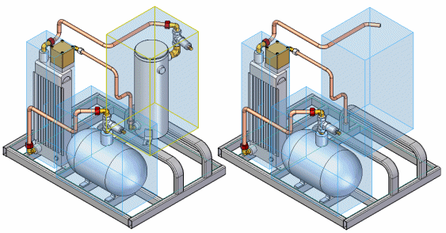

zone
A named, rectangular volume in an assembly that allows you to quickly show, hide, and select the assembly components that fall within the zone. You define a zone using the Create Zone command on the Select Tools command bar.
For example, you can select a zone entry on the Select Tools tab, then click the Hide command on the shortcut menu to hide all the assembly components within the zone.

You can use a zone to show, hide, and select parts, assemblies, assembly sketches, weld beads, and reference planes in an assembly.